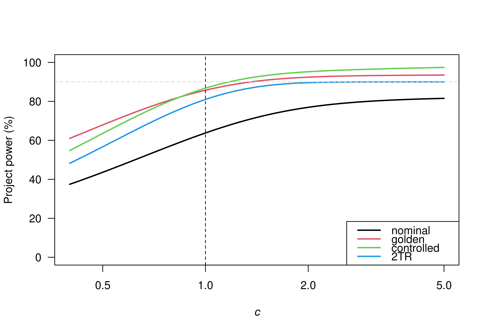

The project power of the sceptical p-value is computed for a specified level, the relative variance, significance level and power for a standard significance test of the original study, and the alternative hypothesis.
Threshold for the calibrated sceptical p-value. Default is 0.025.
Numeric vector of variance ratios of the original and replication effect estimates. This is usually the ratio of the sample size of the replication study to the sample size of the original study.
Significance level for a standard significance test in the original study. Default is 0.025.
Power to detect the assumed effect with a standard significance test in the original study.
Specifies if level and
alpha are "two.sided" or "one.sided".
Type of recalibration. Can be either "golden" (default), "nominal" (no recalibration), or "controlled".
The project power of the sceptical p-value
PPpSceptical is the vectorized version of
the internal function .PPpSceptical_.
Vectorize is used to vectorize the function.
Held, L. (2020). The harmonic mean chi-squared test to substantiate scientific findings. Journal of the Royal Statistical Society: Series C (Applied Statistics), 69, 697-708. doi:10.1111/rssc.12410
Held, L., Micheloud, C., Pawel, S. (2022). The assessment of replication success based on relative effect size. The Annals of Applied Statistics. 16:706-720.doi:10.1214/21-AOAS1502
Maca, J., Gallo, P., Branson, M., and Maurer, W. (2002). Reconsidering some aspects of the two-trials paradigm. Journal of Biopharmaceutical Statistics, 12, 107-119. doi:10.1081/bip-120006450
## compare project power for different recalibration types
types <- c("nominal", "golden", "controlled")
c <- seq(0.4, 5, by = 0.01)
alpha <- 0.025
power <- 0.9
pp <- sapply(X = types, FUN = function(t) {
PPpSceptical(type = t, c = c, alpha, power, alternative = "one.sided",
level = 0.025)
})
## compute project power of 2 trials rule
za <- qnorm(p = 1 - alpha)
mu <- za + qnorm(p = power)
pp2TR <- power * pnorm(q = za, mean = sqrt(c) * mu, lower.tail = FALSE)
matplot(x = c, y = pp * 100, type = "l", lty = 1, lwd = 2, las = 1, log = "x",
xlab = bquote(italic(c)), ylab = "Project power (%)", xlim = c(0.4, 5),
ylim = c(0, 100))
lines(x = c, y = pp2TR * 100, col = length(types) + 1, lwd = 2)
abline(v = 1, lty = 2)
abline(h = 90, lty = 2, col = "lightgrey")
legend("bottomright", legend = c(types, "2TR"), lty = 1, lwd = 2,
col = seq(1, length(types) + 1))
